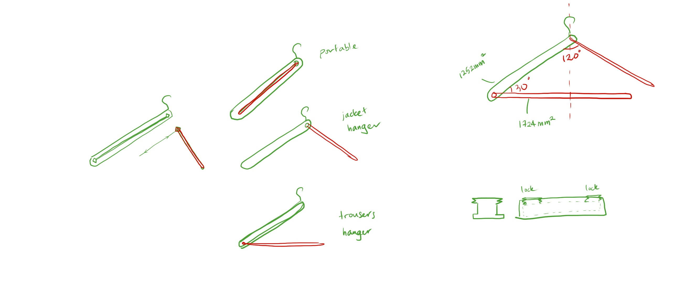
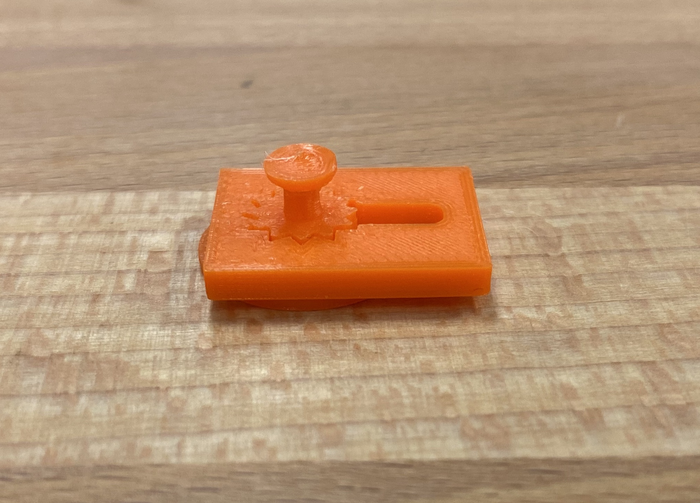
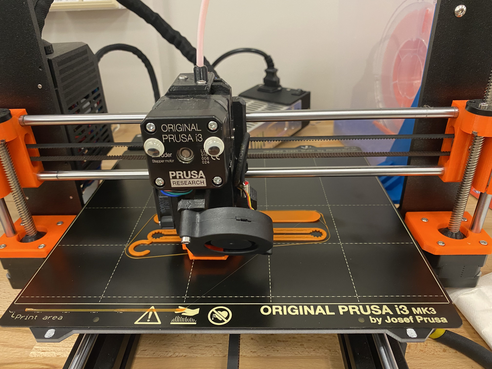
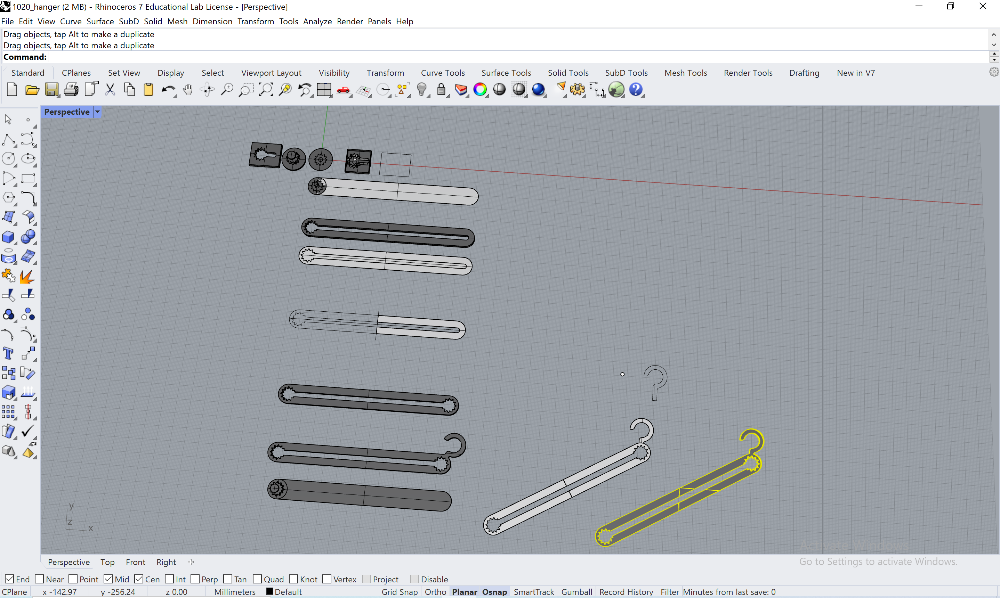
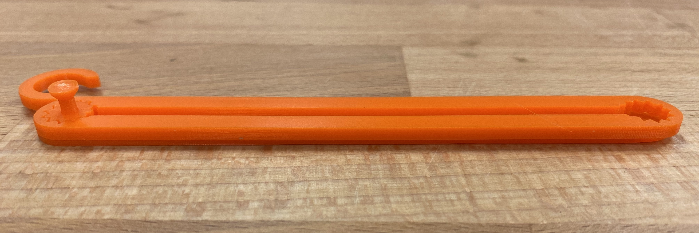
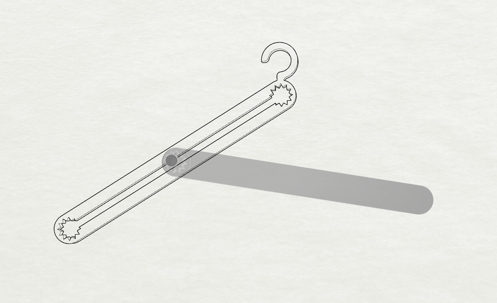

There is no such thing as life-changing magic because hard work pays off.
But again I am practicing making funny titles so walk with me.
Ideation
The ideation revolves around these keywords: folding + extension, rigid bodies + flexible joints, simulated poultry defecation (fake duck poops). This is not a big leap from last week’s cloth piling sensor to this week’s multifunctional cloth hanging device. Some inspirational designs are attached below.


While the first two are quite practical designs, I decided to make a multifunctional hanger closer to the third design.

Test print
I want the joints to rotate and slide inside a slot and stay at a fixed angle when the two beams are positioned at the desired states. I test-printed a 12-pointed star to try out the fits and tolerance.

The top disk that prevents the insert from coming out of the sliding slot has a big overhang. In the next iteration, I chamfered the edge to increase printability.
Making
The test print and the final artifact were both made on the Prusa i3 MK3.

I also decided to add a hook.

The beams are design to fold together to save space.

The circuit is remixed from the sweater sensor circuit. While I really wated to hang the sweater, I can hardly think of a use of a not-so-sensitive pressure sensor in this case.
Visualization
I played with Kangaroo for a while, trying to get a close resemblance of the hanger mechanism. It ended up taking me too long and it’s difficult to map out the sensor reading accurately with such huge fluctuation. So I decided to play with the randomness and go along with a twitchy visualization. The position is roughly mapped onto the Rhino projection.

Here is a live demo: